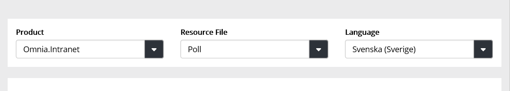
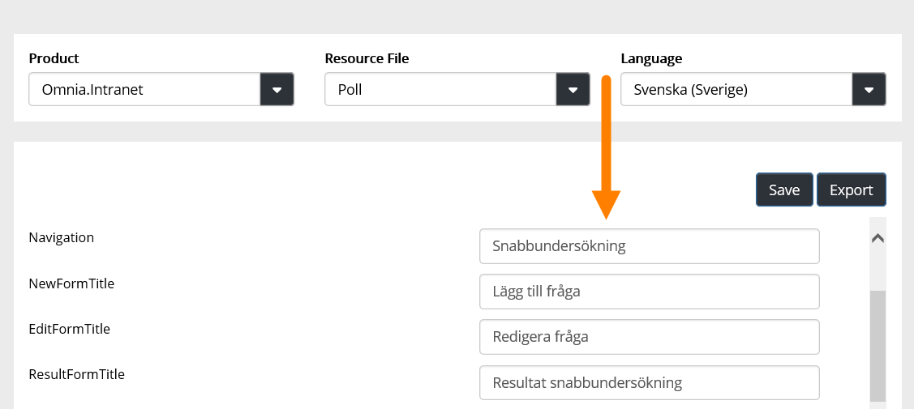

Here you will find language files for Omnia. You can use these files to adapt a lot of field and button labels, and similar, to your organisation, if needed.
Select Product, Resource File and the language you want to work with, for example:

Then use the fields to edit or enter labels in the chosen language.
